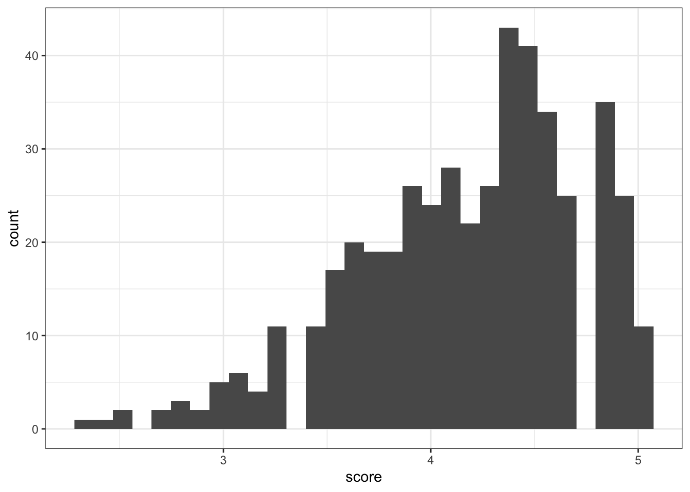
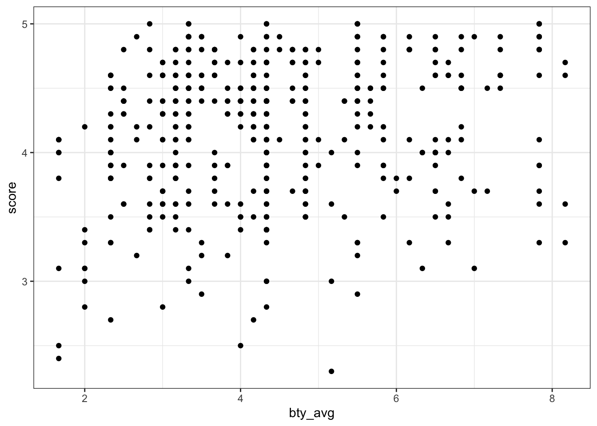
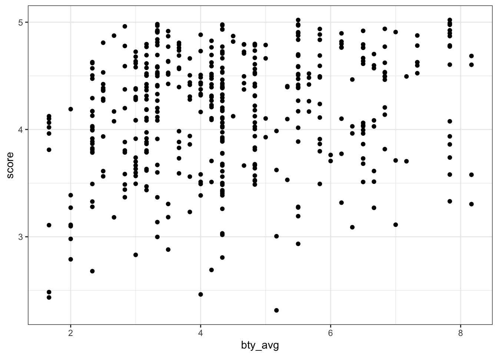
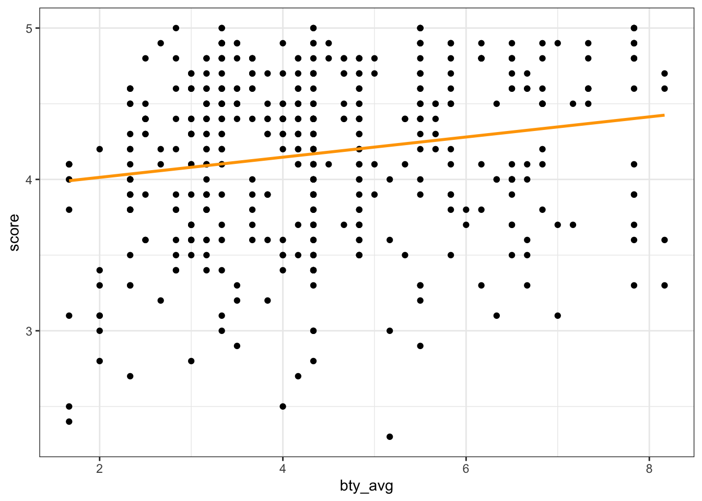

library(tidyverse)
library(tidymodels)Lab 04 - Modelling (Ans)
Getting Started
Load packages
Data
evals <- read_csv("data/evals-mod.csv")Part 1
Exercise 1
First, we use rowwise to group evals by each row. We then use mutate to compute a new variable (bty_avg) corresponding to the average of the six beauty scores.
Finally, we ungroup so that the dataframe isn’t still grouped by each row.
evals <- evals |>
rowwise() |>
mutate(bty_avg = mean( c( bty_f1lower, bty_f1upper,
bty_f2upper, bty_m1lower,
bty_m1upper, bty_m2upper) )) |>
ungroup()Part 2
Exercise 2
The distribution is slightly left-skewed, i.e., many scores are on the higher side (between 4-5) with a longer tail going to the left.
This is further corroborrated by the fact that the mean is lower than the median. Given that the mean is more affected by skew than the median, this is what we’d expect with negatively skewed data.
evals |>
ggplot(aes(x = score))+
geom_histogram() +
theme_bw()`stat_bin()` using `bins = 30`. Pick better value with `binwidth`.
evals |>
summarise(mean = mean(score),
median = median(score),
sd = sd(score))# A tibble: 1 × 3
mean median sd
<dbl> <dbl> <dbl>
1 4.17 4.3 0.544Exercise 3
It seems like there’s a slight positive relationship between bty_avg and score, though it’s hard to tell given that many points overlap and form “bands” along particular values (e.g., many teachers have the same score).
evals |>
ggplot(aes(x = bty_avg,
y = score))+
geom_point() +
theme_bw()
Exercise 4
One way to deal with the above is to add jitter to the plot, which reveals that certain clusters of points were either larger or smaller than initially thought. (Another apprpoach would be to change the alpha of geom_point, allowing us to detect denser clusters.)
evals |>
ggplot(aes(x = bty_avg,
y = score))+
geom_jitter() +
theme_bw()
Part 3
Exercise 5
According to the model, the linear equation would be as follows:
\(\hat{y} = 3.88 + 0.07*X\)
Where \(X\) is bty_avg.
We use broom::tidy to transform the model object into a tidy dataframe.
m_bty <- linear_reg() |>
set_engine("lm") |>
fit(score ~ bty_avg, data = evals)
m_bty |>
tidy() |>
select(term, estimate)# A tibble: 2 × 2
term estimate
<chr> <dbl>
1 (Intercept) 3.88
2 bty_avg 0.0666Exercise 6
evals |>
ggplot(aes(x = bty_avg,
y = score))+
geom_point() +
geom_smooth(method = "lm",
color = "orange",
se = FALSE) +
theme_bw()`geom_smooth()` using formula = 'y ~ x'
Exercise 7
Professors with higher average beauty ratings also tend to receive higher teaching scores.
The slope is approximately 0.07, which means that for every 1-unit increase in beauty rating (i.e., from 4 to 5), we can expect that a professor will receive .07 higher teaching scores (with a ~0.02 standard error).
m_bty |>
tidy() |>
filter(term == "bty_avg") |>
select(term, estimate, std.error)# A tibble: 1 × 3
term estimate std.error
<chr> <dbl> <dbl>
1 bty_avg 0.0666 0.0163Exercise 8
The intercept is 3.88. This is the estimated score for professors with a beauty score of 0, i.e., it is the value of \(\hat{y}\) when the regression line crosses \(x = 0\).
This may or may not make sense; given that possible beauty scores ranged from 1-6, it is a little strange to imagine a scenario where the beauty score is 0 (and it would be even stranger to imagine scenarios where the beauty scores is negative).
On the other hand, it is not inconsistent with other features of the data: the mean score, for example, is 4.17, so it makes sense that the intercept of a linear model would be slightly lower than the mean, allowing the explanatory variable to account for increases in score throughout the data.
m_bty |>
tidy() |>
filter(term == "(Intercept)") |>
select(term, estimate, std.error)# A tibble: 1 × 3
term estimate std.error
<chr> <dbl> <dbl>
1 (Intercept) 3.88 0.0761Exercise 9
Here, we identify the \(R^2\) of the model using glance, which identifies model-level characteristics.
The value is 0.0350, which means that our explanatory variable accounts for roughly 3.5% of the variance in our response variable.
m_bty |>
glance() |>
select(r.squared)# A tibble: 1 × 1
r.squared
<dbl>
1 0.0350Part 4
Exercise 10
The linear equation would be as follows:
\(\hat{y} = 4.09 + 0.142*X\)
Where \(X = 1\) for male professors and \(X = 0\) for female professors. In other words, the intercept corresponds to the mean score for female professors, while the slope tells us the difference in mean between the female average and the male average.
m_gen <- linear_reg() |>
set_engine("lm") |>
fit( score ~ gender, data = evals)
m_gen |>
tidy()# A tibble: 2 × 5
term estimate std.error statistic p.value
<chr> <dbl> <dbl> <dbl> <dbl>
1 (Intercept) 4.09 0.0387 106. 0
2 gendermale 0.142 0.0508 2.78 0.00558Exercise 11
As specified above, the slope coefficient for the \(X\) term signifies the difference in means between male and female professors.
Exercise 12
Here, the model equation would look as follows:
\(\hat{y} = 4.28 + -0.13*X_1 + -0.145*X_2\)
Where \(X_1 = 1\) for tenure track professors and 0 for all else, and \(X_2 = 1\) for tenured professors and 0 for all else.
In other words: the intercept tells us the mean for teaching professors, and the two slope coefficients tell us the difference between that mean and the two other levels of rank.
table(evals$rank)
teaching tenure track tenured
102 108 253 m_rank <- linear_reg() |>
set_engine("lm") |>
fit(score ~ rank, data = evals)
m_rank |>
tidy()# A tibble: 3 × 5
term estimate std.error statistic p.value
<chr> <dbl> <dbl> <dbl> <dbl>
1 (Intercept) 4.28 0.0537 79.9 1.02e-271
2 ranktenure track -0.130 0.0748 -1.73 8.37e- 2
3 ranktenured -0.145 0.0636 -2.28 2.28e- 2Exercise 13
Here, we use the factor command (within mutate) to reorder the levels of rank such that tenure track is the first level.
evals <- evals |>
mutate(rank_relevel = fct_relevel(factor(rank), c("tenure track",
"teaching",
"tenured")))Exercise 14
This model has the same structure as the previous model using rank, but it has reordered the levels of rank (for rank_relevel) such that tenure track is now first.
This means that the intercept should now be interpreted as the mean score for tenure track professors, and the coefficients represent the difference in means for teaching and tenured professors, respectively.
\(\hat{y} = 4.15 + 0.13*X_1 + -0.0155*X_2\)
Where \(X_1 = 1\) for teaching professors and 0 for all else; and \(X_2 = 1\) for tenured professors and 0 for all else.
We can compare tehse to the coefficients for the previous model, where teaching was the baseline: in both cases, we see that the difference between teaching and tenure track is 0.13 (just in opposite directions, depending on the baseline).
The \(R^2\) of the model is 0.0116 in both cases. In other words, the model explains approximately 1.16% of the variance in score.
m_rank_relevel <- linear_reg() |>
set_engine("lm") |>
fit(score ~ rank_relevel, data = evals)
m_rank_relevel |>
tidy()# A tibble: 3 × 5
term estimate std.error statistic p.value
<chr> <dbl> <dbl> <dbl> <dbl>
1 (Intercept) 4.15 0.0521 79.7 2.58e-271
2 rank_relevelteaching 0.130 0.0748 1.73 8.37e- 2
3 rank_releveltenured -0.0155 0.0623 -0.249 8.04e- 1m_rank_relevel |>
glance() |>
select(r.squared)# A tibble: 1 × 1
r.squared
<dbl>
1 0.0116Exercise 15
evals <- evals |>
mutate(tenure_eligible = case_when(
rank == "teaching" ~ "no",
TRUE ~ "yes"
))
## Double check
table(evals$rank, evals$tenure_eligible)
no yes
teaching 102 0
tenure track 0 108
tenured 0 253Exercise 16
The linear equation is as follows:
\(\hat{y} = 4.28 + -0.141*X_1\)
Where \(X_1 = 1\) for tenure eligible professors and \(X_1 = 0\) for non-tenure-eligible professors.
Thus, this means that the mean score for non-tenure-eligible professors is 4.28, and professors that are tenure eligible can expect a score that’s -0.141 lower, on average.
m_tenure_eligible <- linear_reg() |>
set_engine("lm") |>
fit(score ~ tenure_eligible, data = evals)
m_tenure_eligible |>
tidy()# A tibble: 2 × 5
term estimate std.error statistic p.value
<chr> <dbl> <dbl> <dbl> <dbl>
1 (Intercept) 4.28 0.0536 79.9 2.72e-272
2 tenure_eligibleyes -0.141 0.0607 -2.32 2.10e- 2We can also calculate the \(R^2\), and we see that it is 0.0115. In other words, the model explains approximately 1.15% of the variance in score.
m_tenure_eligible |>
glance()# A tibble: 1 × 12
r.squ…¹ adj.r…² sigma stati…³ p.value df logLik AIC BIC devia…⁴ df.re…⁵
<dbl> <dbl> <dbl> <dbl> <dbl> <dbl> <dbl> <dbl> <dbl> <dbl> <int>
1 0.0115 0.00935 0.541 5.36 0.0210 1 -372. 750. 762. 135. 461
# … with 1 more variable: nobs <int>, and abbreviated variable names
# ¹r.squared, ²adj.r.squared, ³statistic, ⁴deviance, ⁵df.residual